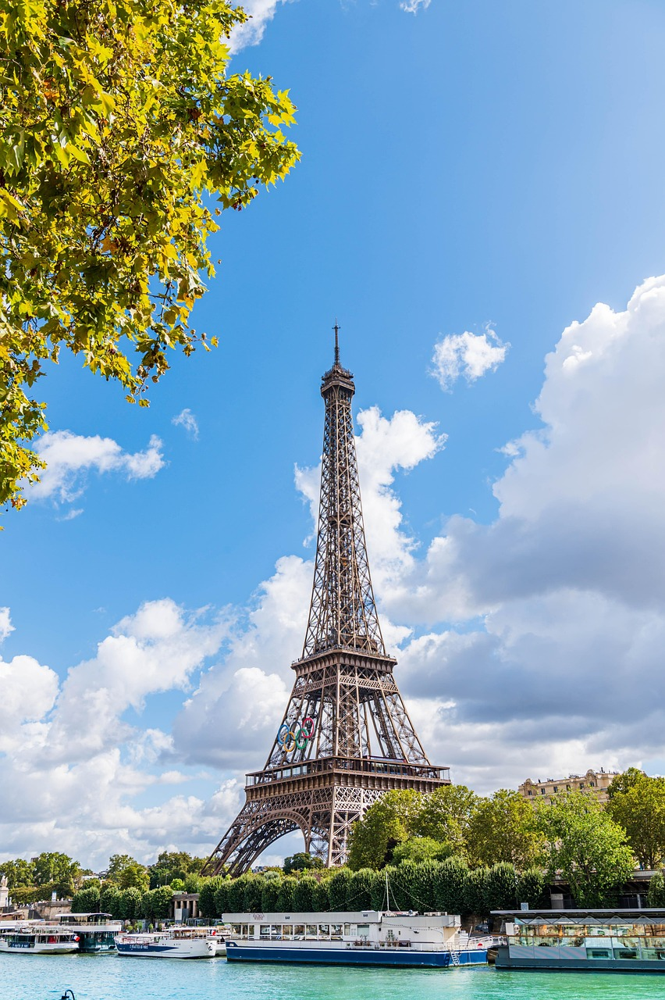
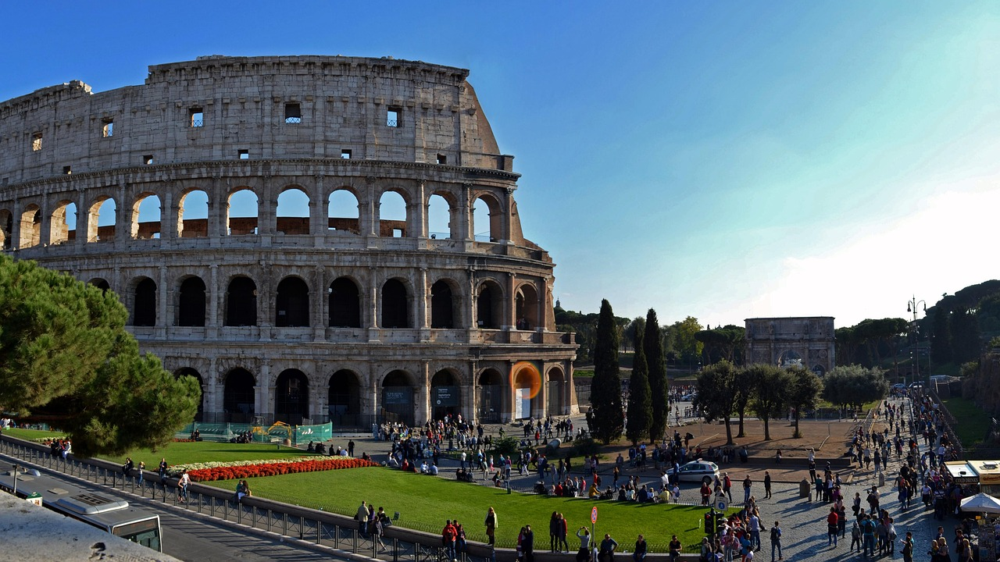
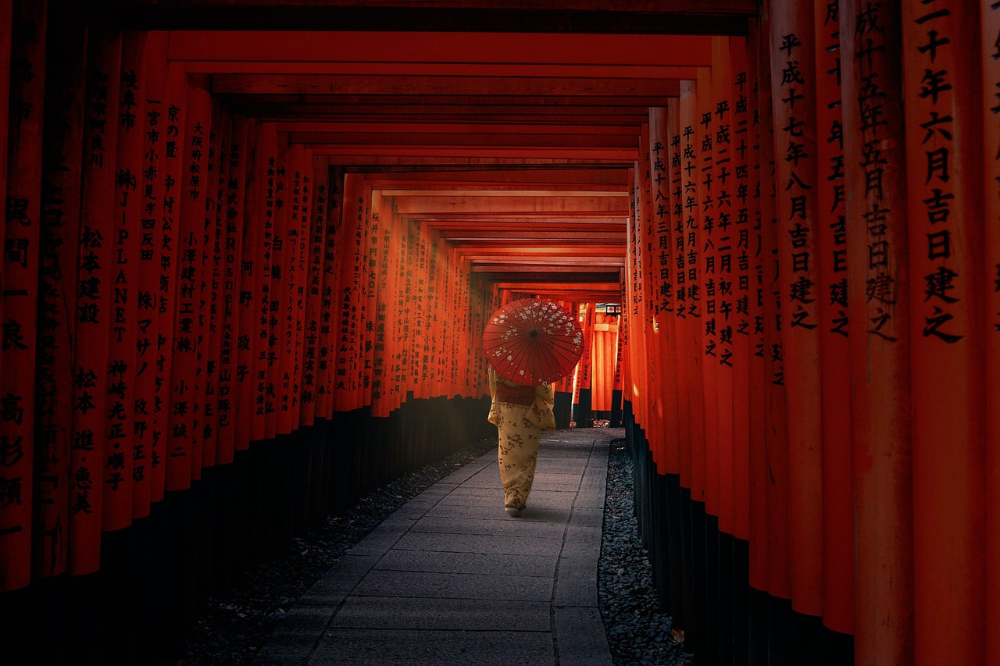

Descubriendo París
Un recorrido por la ciudad del amor, sus monumentos y sus rincones más especiales.
Leer másDescubre todo lo que tenemos para ofrecerte.

Un recorrido por la ciudad del amor, sus monumentos y sus rincones más especiales.
Leer más
Historia, gastronomía y cultura en una de las ciudades más fascinantes de Italia.
Leer más
Templos, paisajes espectaculares y tradiciones que hacen de Japón un destino único.
Leer más¡Hola! Soy el autor de este blog y un apasionado de los viajes. Me encanta descubrir nuevos lugares, conocer otras culturas y vivir experiencias que merecen ser recordadas.
En este espacio quiero compartir mis aventuras, recomendaciones y consejos para ayudarte a descubrir el mundo.